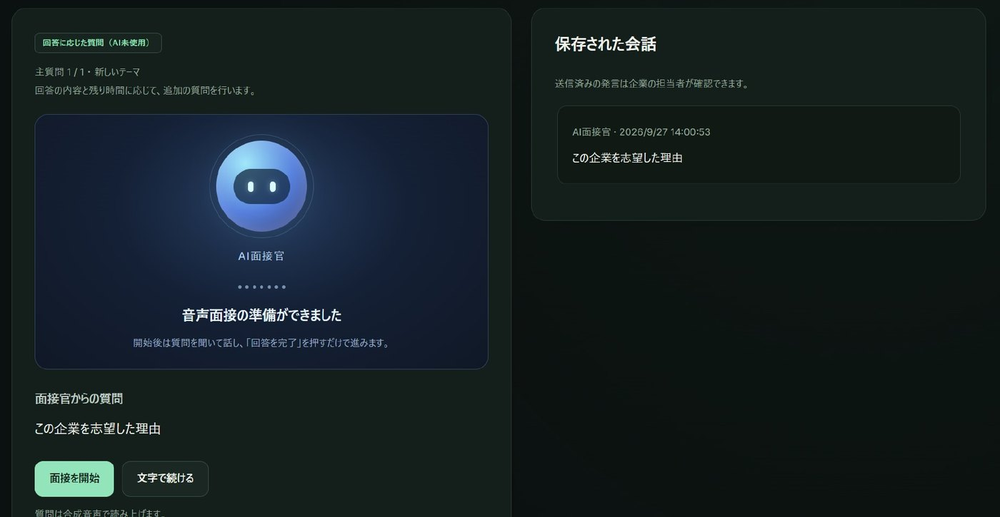
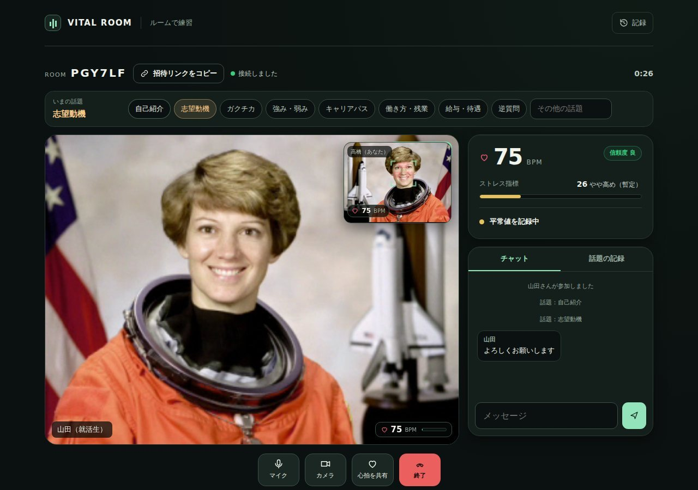

AI-SHOW（相性）
Web面接の映像だけで心拍・ストレスを推定し、互いの緊張を「同意のうえで」共有する。率直な対話を後押しするために、チームで開発したハッカソン作品です。


概要
面接は、お互いに緊張している場です。AI-SHOW(相性)は、その緊張を心拍・ストレスという生体信号から推定し、本人の同意のもとで相手と共有することで、より率直な対話を後押しすることを目指したサービスです。嘘を見抜くためのツールではありません。
| チーム | Life & Medical Hackers(ハッカソン) |
| 担当 | チームリーダー / 企画・フロントエンド・バックエンド・資料作成・発表 |
| フロントエンド | Next.js 14, WebRTC, Web Speech API |
| バックエンド | FastAPI, numpy / scipy(信号処理), SQLite |
サーバー不要のWeb版
Web版 haru-ki417.github.io/Harinezumi-AI-Hack/ — インストールも登録も不要で、スマホからも使えます。
大会で作ったフル版はNext.jsとFastAPIのサーバーで動きます。だれでもすぐ試せるように、バックエンドの信号処理(POS法・帯域通過フィルター・FFT・HRV・平常値との比較)と、面接の深掘り質問・振り返りのロジックをJavaScriptに移植し、ブラウザーの中だけで動くWeb版を作りました。チームのリポジトリには、既存のコードを変えずに別のフォルダーとして追加しています。

- ひとりで計測: 顔検出(MediaPipe)→額と両頬の肌の色→脈波→心拍・RMSSD・SDNN・ストレス指標
- ルームで練習: PeerJS(WebRTC)で2人を直接つなぎ、数値・話題・チャットを共有。映像通話は双方が選んだときだけ
- AI面接練習: 回答に合わせて理由・結果・学びを深掘りし、発言を引用した振り返りを作る(合否・性格・生体情報は使わない)
- 移植の検証: 同じ入力をPython版とWeb版に与え、脈波の差が1e-11以下、BPM・HRV・状態の移り変わり・質問の選択・振り返りの内容が完全に一致することを確認
rPPGによる非接触バイタル推定
皮膚の色は、心拍に合わせてごくわずかに変化します。rPPG(remote photoplethysmography)はこの変化をカメラ映像から読み取る技術です。WebRTCで受け取った顔映像から関心領域(ROI)を切り出し、次のパイプラインで心拍数・HRV・ストレス推定値を算出しています。
- 顔ROI抽出ROIを安定化
- POS法Wang, 2017
- 帯域通過0.7–4.0 Hz
- FFTピークをサブビン補間
- 出力心拍・HRV・ストレス
0.7〜4.0Hzは心拍数42〜240bpmに相当する帯域です。信号処理はすべてFastAPI側(numpy/scipy)で15〜30fpsで行い、ROIの安定化によって体動や照明変化の影響を抑えています。
同意ファーストのプライバシー設計
カメラ映像そのものは一切保存せず、明示的な同意チェックを得たうえで、最大1秒に1回の数値データだけを相手に共有します。
推定が不安定なときは「顔を検出できません」「脈波が安定していません」といった具体的なメッセージを表示し、精度が照明や体動に左右されること、医療行為や合否判定のためのツールではないことをUI上で明示しています。
AI面接モードと、面接後のレポート
AIによる音声面接モード(Web Speech APIによる読み上げ・文字起こし)と、人対人の面接モードの両方に対応し、画面共有やリアルタイム文字起こしも実装しました。面接後には、AI面接官によるフィードバックレポートと、エントリーシートの内容とのマッチングサマリーを自動生成し、記録をSQLite・JSON・CSVで保存できます。
- Webカメラ映像のみで心拍数・HRV・ストレス値を非接触推定(rPPG / POS法)
- 同意チェック必須、映像は保存せず数値のみを共有
- AI音声面接/人対人面接の両モード、リアルタイム文字起こし・画面共有
- 面接後のAIフィードバックレポートと、ES照合サマリーの自動生成
リーダーとして担ったこと
企画のアイデア出しから、フロントエンドとバックエンドの実装、発表資料の作成、本番のプレゼンテーションまで、プロダクトの最初から最後までを担当しました。
今後の展望
実際のパルスオキシメーターとの比較による精度検証、TURNサーバーの導入と本番HTTPS環境へのデプロイ、複数人・複数面接への対応を予定しています。